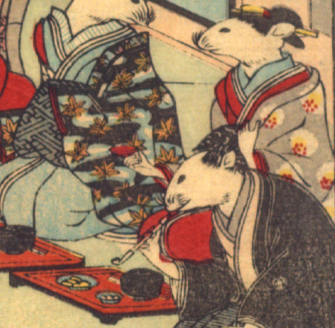

女の鼠。髪を結い、簪を挿し、白い花の柄が入った墨色の着物を身にまとっている。座って、左手を胸元にあて、画面左側の鼠の方を向いている。手は人間のものである。その前に赤い膳が置かれている。
著作者：David Thompson／出典：親書誌：U426_nichibunken_0112：Nedzumi no Yome-Iri／日付：2006／資源識別子：U426_nichibunken_0112_0010_0008
Copyright (c)2010- International Research Center for Japanese Studies, Kyoto, Japan. All rights reserved.